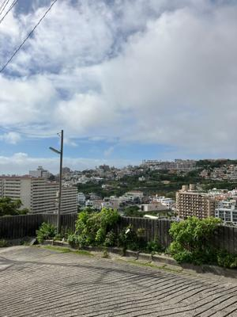
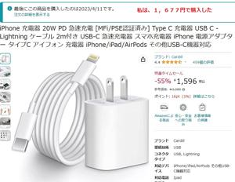
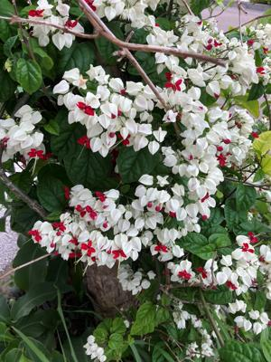

うるがいの話 ある日
最新: 充電器は不良品だ【うるがいの話 ある日】とは 一日だけのプログです
『うるがいの話』の最新一日だけのプログで、通信料が少なく経済的だ。カニの画像をクリックすると全ての日付が載る『うるがいの話』サイトを表示します
|
|
【うるがいの話】 うるがい(ｳﾙｶﾞｲ urugai)とは、『もずくがに』の名前でとても大きくなります。 |
|---|---|
|
|
【カミマヤーの話】 猫のことを方言でマヤーといいます。カミマヤー（kamimayaa）とは、神の猫のことです。 |
|
【たながぁの音楽】 たながぁ（ﾀﾅｶﾞｰ tanagaa）とは手長えびのことで、何種類かあり大きいのは車 エビぐらいになります。 |

|
【ぶながぁの話】 ぶながぁ(ﾌﾞﾅｶﾞｰ bunagaa)とは、赤い髪の毛、赤い身体、そして身長は１ｍ２０ｃｍ ぐらい、川の蟹を食べているの目撃された。場所は沖縄県国頭郡大宜味村のと ある村僕の隣近所に住んでいる爺さんから、聞いた話です。 |
|
|
【ギーマの話】 ギーマ(giima)とは、山原の里山に咲くスズランに似た、 花を付けます。実は食べられます、 気が付くと口の周りが紫になっています。 |
2023年05月29日 (月）充電器は不良品だ
15:28
 
なんと、とうとう充電ができない。仕方ないので、急速充電ではない普通の充
電器でチンタラ充電した。もう一度、Ａｍａｚｏｎのサイトで確認すると特選
タイムセール５７％で参考価格３，５８０円が１，５９６円で売られている。
私が買った時も特選タイムセールで１、６７７円だった。使い始めは、急速充
電１時間で百パーセント、凄いと評価したが、次回から充電したものの暫く経
って確認したが充電されていない。再度、設置し直すと正常に・・・、充電の
たんびに接続しなおす回数が増えてきた。そして、とうとう今日私はキレタ！
。完全に不良品だべ、さてどうするか。ま、安いのには何にかがあるのである
のだ。

１５時２０分 ビットコインの総資産 ￥１１、３６９（↑３２６）